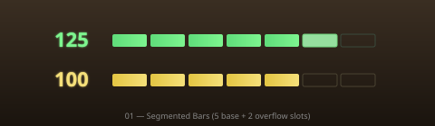
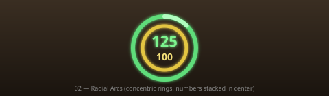
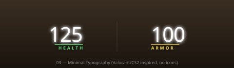
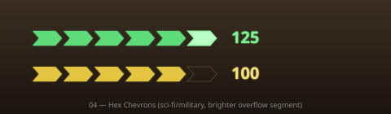

Five mockups at the same scale as the existing widget (~480×140 px crop). Health=125 (overflow), Armor=100. Backgrounds are dim placeholders — in-game these float over the world.

Pros: Reads instantly at a glance. Discrete 25-unit segments give clear "low HP" cues. Overflow slot makes 100→125 visually distinct.
Cons: Wider footprint than current widget. Needs careful tuning for ultra-low HP (1 segment ≈ tiny).

Pros: Compact circular footprint matches the crosshair-centered placement. Numbers stay in eye-line. Two arcs encode HP+armor without extra real estate.
Cons: Arc fill changes are subtle in peripheral vision. Could conflict with the existing pip ring.

Pros: Very modern (CS2/Valorant feel). Numbers are huge and unambiguous. No icon clutter.
Cons: Loses the "fill level" intuition — you only know exact numbers. Damage flashes have to do all the perceptual work.

Pros: Sci-fi aesthetic that suits UT's tone. Discrete segments like option 01 but more "personality". Overflow segment is visually distinct.
Cons: Wider footprint. Slanted edges are harder to draw correctly with UE4 Canvas (need quads, not the simple DrawTexture path).
Pros: Smallest footprint. Two-color paired meters read fast. Overflow ring on top of HP pill is a nice cue without taking extra space.
Cons: Vertical fill is less common in FPS HUDs — slight learning curve. Numbers are small.